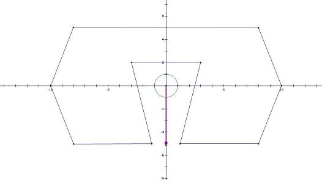

Home Page
F.A.Qs
Statistical Charts
Past Contests
Scheduled Contests
Award Contest
| Online Judge | Problem Set | Authors | Online Contests | User | ||||||
|---|---|---|---|---|---|---|---|---|---|---|
| Web Board Home Page F.A.Qs Statistical Charts | Current Contest Past Contests Scheduled Contests Award Contest | |||||||||
|
Language: Intuition of Escape
Description One of the mysteries in the world of Faerieland is the lake of M. The lake's name comes from the legendary leader M (whose true name was, unfortunately, not recorded in the history of Faerieland) and it was said that once General M experienced a soul-stirring victory when he was still unknown to public. The official records during the battle at the lake of M about General M's command strategy make M more mysterious—approximately 2/3 of the tactics he made derives from his own intuition! Though some people hold the opinion that M's characteristic is no more than lucky since his enemies made as many mistakes as possible, others believe that M's victory relies on his outstanding estimation of the war situation. Nowadays people are more interested in General M's unbelievable intuition since a new manuscript recording the whole battle is discovered. The last paragraph described that: "...The success of General M's plan destroyed the balance of the war and our victory can be expected soon. But enemy troops can not be destroyed immediately and they will absolutely assault at dawn. General M selected a route to retreat without any information of enemy troops and amazingly nobody has discovered our actions..." Since it really sounds fantastic, you want to verify whether M is as lucky as rumored. You have accidentally got a sketch of the force distribution before M's retreat and you decided to confirm if M's successful retreat is possible. The biggest vehicle in M's troop can be described as a circle with radius R and initially its central point is at position (0,0). It can be assumed that if the biggest vehicle is not discovered, the whole troops will not be discovered. Each alert area of enemies can be described as a polygon. Note that two polygons may have a joint area. Since this vehicle has not been discovered by any of the enemies, we can believe that the circle would not intersect with any of the polygons during the movement. Besides, the biggest vehicle have some problems with its turning system so that it can only move at a certain direction (in another word, the route of this vehicle is a radial line with starting point (0,0)). If the vehicle never touches any of the alert area when it moves on the selected radial line, the escape is considered possible. Given the force distribution, you are needed to calculate whether M's escape is possible or there are conflicts between the two records. Input The first line contains a non-negative integer N, the number of polygons, at most 100. Output Output contains exactly one line. Write the word "Survive!" if M's escape is possible or the word "Baffling!" if M cannot select a route satisfy the rules mentioned above. Sample Input Sample input 1 1 1 10 1.1 -5 8 -5 10 0 8 5 -8 5 -10 0 -8 -5 -1.1 -5 -3 2 3 2 Sample input 2 1 1 10 0.9 -5 8 -5 10 0 8 5 -8 5 -10 0 -8 -5 -0.9 -5 -3 2 3 2 Sample Output Sample output 1 Survive! Sample output 2 Baffling! Hint  For sample 1, the escape direction is shown as a red arrow in the picture. Since the exit in sample 1 becomes narrower, there’s no such escape route for sample 2. Source POJ Founder Monthly Contest – 2008.10.05, cyqclark |
[Submit] [Go Back] [Status] [Discuss]
All Rights Reserved 2003-2013 Ying Fuchen,Xu Pengcheng,Xie Di
Any problem, Please Contact Administrator